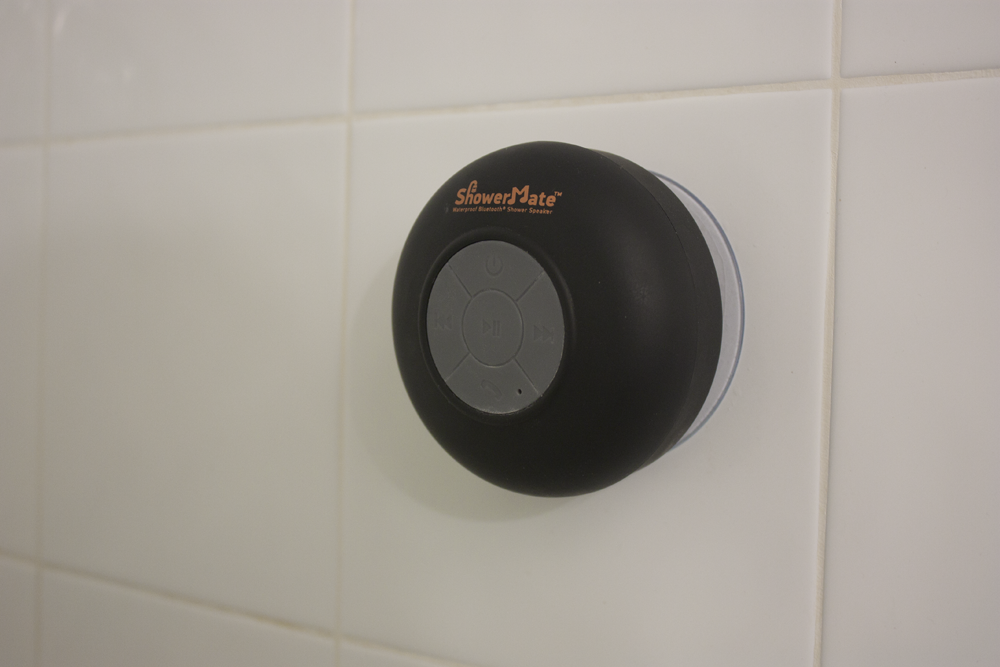
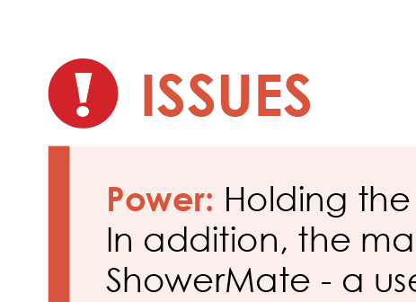
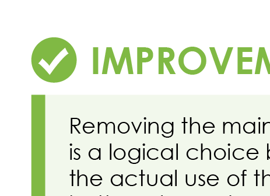
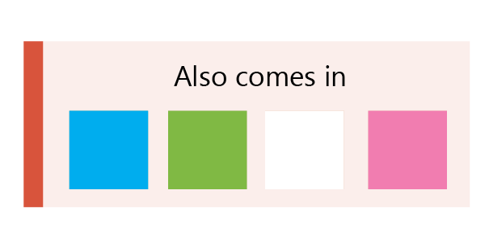
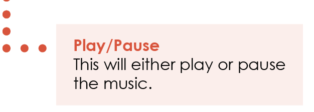
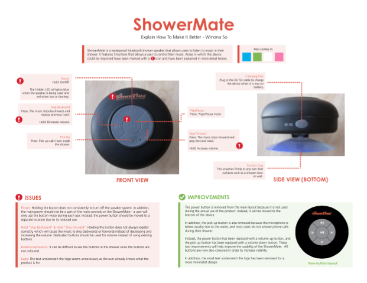

Take a toy or household item (or anything), think of 3+ things you would make better (both aesthetic and/or functional; don't forget the little details) and create a short, 1 to 2 pg doc explaining to someone exactly what changes/improvements are needed. Tip: Pretend you're writing to someone who doesn't understand English that well; Be as clear as possible, and remember pictures/diagrams often speak louder than words.
The first step of the project was to choose an object to explain to make better. This was crucial to the project because I had to pick an item that had different parts, but also areas for improvement.

I decided to go about a day looking at the different things I interacted with on a daily basis, and ended up picking the shower speaker due to the problems I found while using it.
Whenever starting a new design, I like to start off with paper and pen in order to get some ideas going and some brainstorming.

As seen above, I originally wanted to use two pages to describe the problems and solutions. While actually working on it though, while describing areas with issues, it seemed silly that I had to refer back and forth between the two pages to look at the problems and think of solutions. I decided to put both on one page in order to make it more user friendly.
I started with the layout of the different elements, and then the copy came afterwards. After working on a layout that I was happy with, I went back and revised the copy so that it was more clear and better reflected the tone of the style.
Here I've highlighted some of the details in the project.
   
After a few hours, I finished something that I was pretty happy with. See the PDF Copy.
